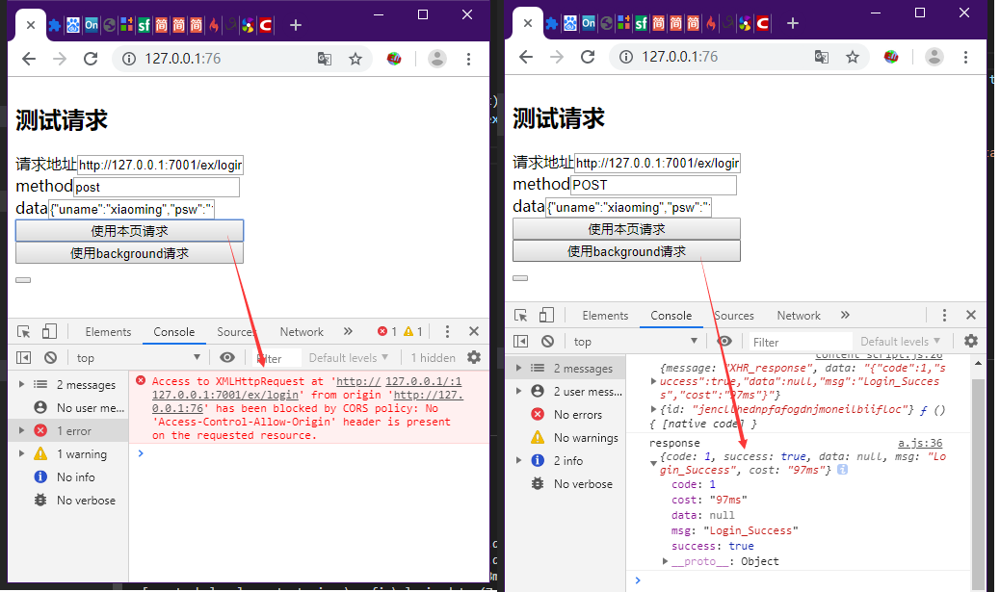
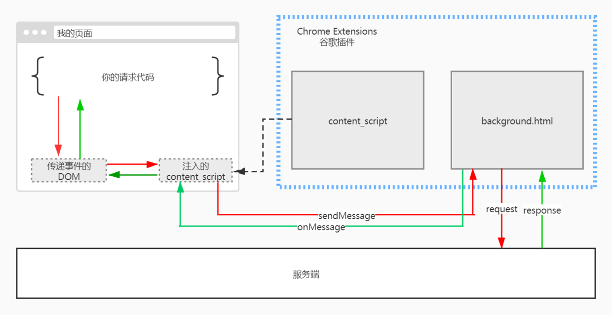

前端通过Chrome插件跨域请求
我们肯定学过，通过 jsonp 实现跨域请求，或是后台通过 cors 实现跨域请求，这次开拓一个新思路，使用 chrome 插件绕过浏览器同源策略
参考文档：http://chrome.cenchy.com/ https://developer.chrome.com/extensions
DEMO 效果图

原理图

background.html：background 页是chrome://extensions/打开的，没有域，所以使用 background 请求不会被浏览器同源策略影响
content_script:通过谷歌插件注入到页面中的 JS，使用他创建 EventDom 用于接收提交按钮的请求发送给 background 页
EventDom:因为 content_script 是无法直接与页面中的 JS 通信的，但是 content_script 可以操作页面中的 dom，我们可以使用 content_script 创建一个 EventDom.帮我们传递 事件 与 数据
1. 创建一个 Chrome 插件项目
创建 manifest.json
{
"manifest_version": 2,
"name": "One-click Kittens",
"description": "This extension demonstrates a browser action with kittens.",
"version": "1.0",
"permissions": [
"http://127.0.0.1/",
"tabs"
],
"browser_action": {
"default_icon": "icon.png",
"default_popup": "popup.html"
},
"background": {
"scripts": [
"background.js"
]
},
"web_accessible_resources": [
"/*"
],
"content_scripts": [
{
"matches": [
"http://127.0.0.1/"
],
"js": [
"content_script.js"
]
}
]
}
2.background.js
background 中通过 chrome.runtime 中的 api，可以实现 background 和 content_script 之间的的通信 background 使用 tabId 给对应的 content_script 发送消息
chrome.runtime.onMessage.addListener(function (e, sender) {
const { message, data } = e;
const tabId = sender.tab.id;
switch (message) {
case 'XHR':
request_proxy(data, tabId);
break;
}
});
function request_proxy({ url, method, data }, tabId) {
var XHR = new XMLHttpRequest();
XHR.open(method, url);
XHR.setRequestHeader('Content-Type', 'application/json;charset=UTF-8');
XHR.send(data);
XHR.onreadystatechange = function () {
if (XHR.readyState === 4) {
chrome.tabs.sendMessage(tabId, {
message: 'XHR_response',
data: XHR.responseText,
});
}
};
}
3.content_script
使用 content_script 创建 EventDom。这里随便创建了个‘button’，没别的意思，任何标签都可以，只是使用 element.dispatchEvent 触发自定义事件。 然后通过触发（dispatchEvent）/响应（addEventListener）EventDom 的事件与 HTML 页进行通信 并通过 chrome 的 API 发送（chrome.runtime.sendMessage）/接收（chrome.runtime.onMessage.addListener）与 background 进行通信 dispatchEvent:https://developer.mozilla.org/zh-CN/docs/Web/API/EventTarget/dispatchEvent
var button = document.createElement('button'); //创建EventDom
button.id = 'chrome_eventBus';
button.addEventListener('request_proxy', function (e) {
let { eventData } = e.target.dataset;
eventData = JSON.parse(eventData);
let { url, method, data } = eventData;
chrome.runtime.sendMessage('jencllhednpfafogdnjmoneilbiifloc', {
message: 'XHR',
data: {
url,
method,
data,
},
});
});
document.body.appendChild(button);
const e = new Event('content_script_Ready'); //触发自定义事件，在content_script注入并添加dom后，通知html页绑定Dom的事件
document.body.dispatchEvent(e);
chrome.runtime.onMessage.addListener(function (e, sender, sendResponse) {
console.log(e, sender, sendResponse);
const { message, data } = e;
switch (message) {
case 'XHR_response':
response(data);
break;
}
});
function response(data) {
button.dataset['eventData'] = data;
const e = new Event('response');
button.dispatchEvent(e);
}
4.Html 页
html 页就是你的项目，在这里你需要在 content_script 注入完毕后为 EventDOM 绑定事件。将请求通过 EventDom 发送给 content_script 例如 登陆请求时 dispatch EventDom 的 request_proxy 事件，通过 html5 的 dataset 传递数据（也可以通过别的传,例如 localstorage，indexdb。。。）
let iptUrl = document.getElementById('url');
let iptMethod = document.getElementById('method');
let iptData = document.getElementById('data');
let $ChromeEventBus = null; //EventDom
document.getElementById('req-default').addEventListener('click', () => {
let url = iptUrl.value;
let method = iptMethod.value;
let data = iptData.value;
let XHR = new XMLHttpRequest();
XHR.open(method, url);
XHR.send(JSON.stringify(data));
});
document.getElementById('req-background').addEventListener('click', () => {
let url = iptUrl.value;
let method = iptMethod.value;
let data = iptData.value;
let option = {
url,
method,
data,
};
$ChromeEventBus.dataset['eventData'] = JSON.stringify(option);
const e = new Event('request_proxy');
$ChromeEventBus.dispatchEvent(e);
});
document.body.addEventListener('content_script_Ready', Init); //当content_script注入完毕，并且创建EventBus后，进行事件的初始化
function Init() {
$ChromeEventBus = document.getElementById('chrome_eventBus');
$ChromeEventBus.addEventListener('response', function (e) {
let { eventData } = e.target.dataset;
console.log('response', JSON.parse(eventData));
});
}